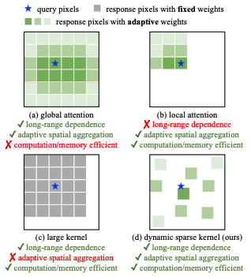

Recent Works
Urban Road Mapping Based on Multi-source Perception
Focusing on lane level topology, bridging the perceived checkpoints in mapping, supporting the construction of light maps.
Corresponding products have been technically validated in customers such as Horizon, Daimler, and Nvidia.
Focusing on lane level topology, bridging the perceived checkpoints in mapping, supporting the construction of light maps.
Corresponding products have been technically validated in customers such as Horizon, Daimler, and Nvidia.

Construction of AVP Parking Lot Perception Mapping Platform
Including functional modules such as data collection, data preprocessing, perception vectorization, and automatic input, achieving a comprehensive cost reduction of over 70% in mapping, covering over 4000 parking lots in more than 50 cities across the country.
Corresponding products have been launched on customers such as BMW and Hongqi.
Including functional modules such as data collection, data preprocessing, perception vectorization, and automatic input, achieving a comprehensive cost reduction of over 70% in mapping, covering over 4000 parking lots in more than 50 cities across the country.
Corresponding products have been launched on customers such as BMW and Hongqi.
Publications
Direction-dominated Change Vector Analysis for Forest Change Detection
Pengfeng Xiao*, Guangwei Sheng, Xueliang Zhang et al.
International Journal of Applied Earth Observations and Geoinformation(SCI Q1), 2021
[Paper]
A Semi-supervised Change Detection Method.
Pengfeng Xiao*, Guangwei Sheng, Xueliang Zhang et al.
International Journal of Applied Earth Observations and Geoinformation(SCI Q1), 2021
[Paper]
Differences in Snow Albedo Between Tianshan Mountains and Northern Xinjiang
Guangwei Sheng, Pengfeng Xiao, Xueliang Zhang et al.
Arid Land Geography, 2019
[Paper]
Analysis of Spatiotemporal Differences in Data.
Guangwei Sheng, Pengfeng Xiao, Xueliang Zhang et al.
Arid Land Geography, 2019
[Paper]